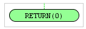

Elemento Return
Esta funcion sirve para cerra una subrutina o procedimiento.
Puede devolver un valor establecido

En el esquema vemos como el prpcedimiento Test devuelve a traves de la función "Return" el valor de
a+b*5 que es el valor de "y=Test(5,3)"